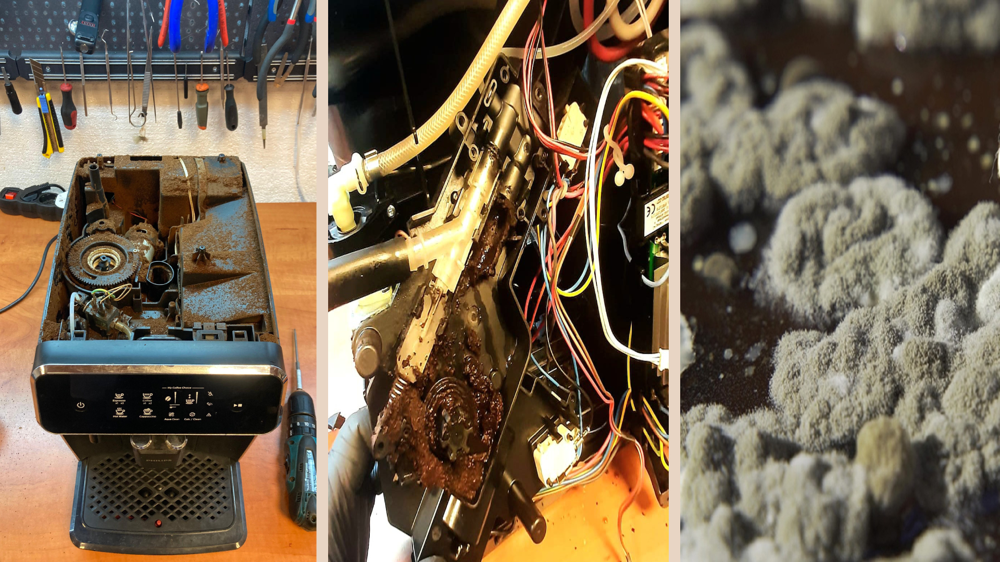

Cik maksÄ remonts?

KÄpēc servisa apkope jÄveic laicīgi?

Kafijas automÄti un aukstums

KÄ notiek remonta un apkopes process?

KÄ izvēlēties kafijas automÄtu?

Rūpes par kafijas automÄtu mÄjÄs

KÄ izvēlēties kafijas pupiņas?

 +371 22057555
+371 22057555 ecmserviss@gmail.com
ecmserviss@gmail.com

 Rīga, Satiksmes 1 (Pardaugava)
Rīga, Satiksmes 1 (Pardaugava)